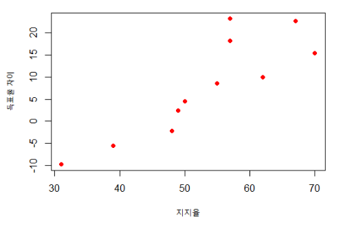
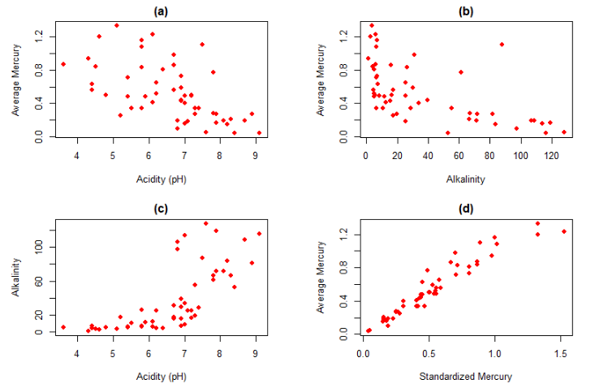
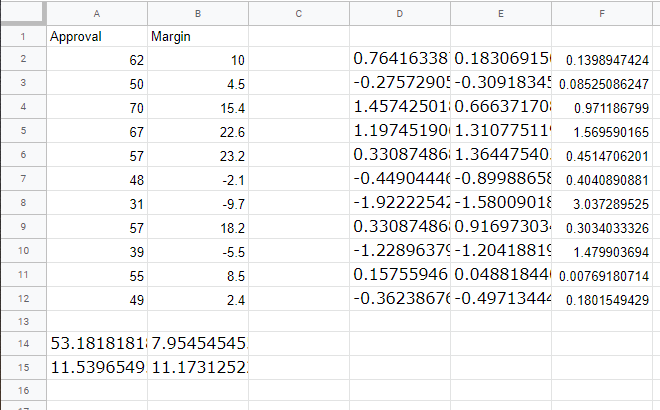
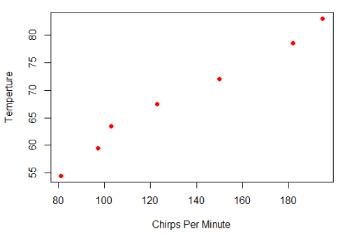
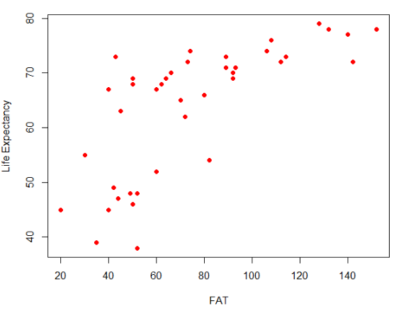
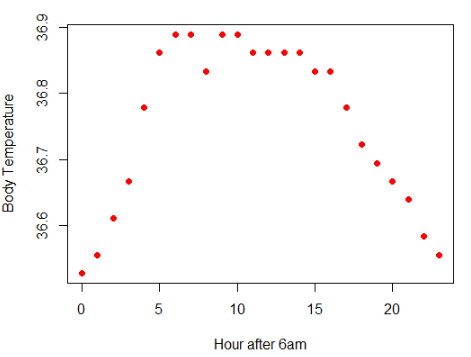
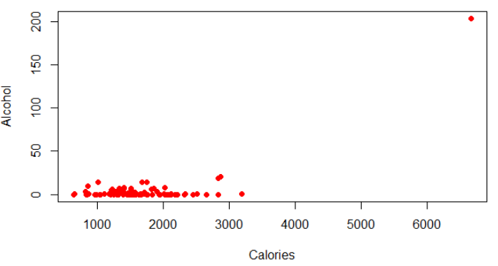
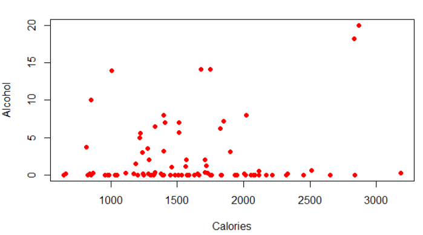
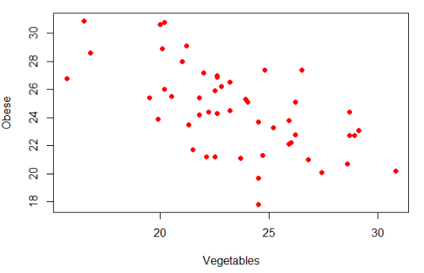

2.5 양적 변수 두 개: 산점도와 상관관계
예제 2.32. 미국 대통령이 재선에 출마할 때 대통령의 지지율과 선거 결과 사이에는 강한 관계가 있을까? 위 표에 현직 대통령의 지지율(Approval)과 득표율 차이(Margin)가 있다.
(1) 선거에 졌지만 지지율이 가장 높은 후보는 누구인가? 가장 낮은 지지율로 선거에 이긴 후보자는 누구인가? 현직 대통령이 재선에 성공하기 위하여 필요한지지율은 얼마라고 생각하는가?
(2) 지지율과 득표율 차이는 모두 양적 변수이다. 두 변수 사이에 연관(association)이 있다고 생각하는가?
풀이 (클릭하면 풀이가 보입니다)
(1) 현직 대통령 \(3\)명이 선거에 패배했고 가장 높은 지지율은 \(48\%\)이다. \(8\)명의 대통령이 재선에 성공했고 가장 낮은 지지율은 \(49\%\)이다. 재선에 성공하려면 \(49\%\) 이상의 지지율이 필요할 것 같다.
(2) 지지율이 높아질수록 득표율 차이도 증가하는 경향이 있다.
양적 변수 두 개의 관계 시각화: 산점도
양적 변수 두 개 사이에 관계가 있는지를 그래프로 표현할 때 가장 많이 사용하는 방법이 산점도(scatter plot)이다. 산점도는 \(2\)차원 그래프에 쌍으로 주어진 데이터를 점으로 찍어 표시한다.
예제 2.33. 지지율과 득표율 차이를 산점도로 그리시오. 데이터는 ElectionMargin에서 얻을 수 있다.
풀이 (클릭하면 풀이가 보입니다)
지지율이 득표율 차이를 설명하는데 도움을 준다고 생각하는 것이 합리적이다. 따라서 지지율이 설명변수, 득표율 차이는 반응변수이다. 설명변수인 지지율은 수평축, 반응변수인 득표율 차이는 수직축에 놓는다. 아래 산점도에서 지지율이 높아질수록 득표율 차이가 증가하는 경향이 있음을 알 수 있다.

산점도를 볼 때 자주 하는 질문은 다음과 같다.
- 점들이 특정 방향으로 명확한 추세(trend)를 보이는가?
- 추세가 있다면 상승 추세인가 아니면 하락 추세인가? 상승 추세를 양의 연관(positive association), 하락 추세를 음의 연관(negative association)이라고 부른다.
- 추세가 있다면 직선인가? 아니면 곡선인가?
- 데이터의 패턴에서 벗어나는 이상점(outlier)이 있는가?
재선에 출마한 대통령의 지지율과 득표율 차이는 산점도를 보면 양의 연관이 있음을 알 수 있다. 점들이 모두 직선 위에 정확히 있지는 않지만 추세는 직선이라고 할 수 있다.
확인문제 1. 산점도(scatter plot)를 사용할 때 가장 적절한 상황은?
1 범주형 변수 두 개의 관계를 분석할 때
2 범주형 변수와 양적 변수 간의 관계를 비교할 때
3 양적 변수 두 개 사이의 관계를 시각적으로 분석할 때
4 하나의 변수만을 분석하여 분포를 파악할 때
확인문제 2. 두 개의 양적 변수 간에 양의 연관(positive association)이 존재하는 경우에 대한 설명으로 옳은 것은?
1 한 변수의 값이 증가할 때 다른 변수의 값은 감소하는 경향이 있다.
2 산점도에서 데이터 점들이 대체로 오른쪽 위 방향으로 배열된다.
3 두 변수 사이에는 항상 인과관계가 성립한다.
4 데이터가 직선 형태로만 나타날 때 양의 연관이 존재한다.
확인문제 3. 다음 중 산점도를 분석할 때 고려해야 할 요소로 적절하지 않은 것은?
1 데이터가 특정한 방향으로 패턴을 가지는지 여부
2 두 변수 사이의 관계가 선형인지 또는 비선형인지 여부
3 데이터 값이 특정 범주에 속하는지 여부
4 이상점(outlier)이 존재하는지 여부

예제 2.34. 미국 플로리다주의 \(53\)개 호수의 수질 데이터에서 평균 수은 농도(Average Mercury), 알칼리 농도(Alkalinity), 산도(pH), 표준화 수은 농도(Standardized Mercury, 지난 \(3\)년간의 수은 농도를 표준화) 등의 변수들 사이의 산점도가 위에 있다. 각각의 산점도에서 어떤 정보를 얻을 수 있는지 설명하라. 또한 연관이 양 또는 음이라면 호수의 수질에서 무엇을 의미하는지 기술하라.
풀이 (클릭하면 풀이가 보입니다)
산도(Acidity)와 평균 수은 농도 사이에는 음의 직선 관계가 있는 것으로 보이지만 강하지는 않다. 음의 연관이므로 산도가 증가하면 수은 농도는 낮아지는 경향이 있다.
알칼리 농도와 평균 수은 농도 사이에는 음의 연관이 있다. 추세는 약간 강한 곡선으로 보인다. 호수 하나의 평균 수은 농도는 \(1.1\)ppm으로 높고 알칼리 농도 또한 약간 높은 \(90\)mg/L 이다. 두 값 모두 각각의 변수에서 이상점은 아니지만 산점도에서 보면 이상점이다. 음의 연관이므로 알칼리 농도가 높아지면 평균 수은 농도가 낮아지는 경향이 있다.
산도가 증가하면 알칼리 농도는 곡선으로 증가하는 양의 연관이 있다.
평균 수은 농도와 표준화 수은 농도 사이에는 강한 연관이 있고 추세는 거의 직선이다.
양적 변수 두 개의 관계를 요약: 상관관계
평균이나 중앙값이 분포의 중심을 요약하고 표준편차 또는 사분위수범위가 변동을 요약하는 것처럼 두 개의 양적 변수의 연관 강도나 방향을 요약하는 수치 통계량이 필요하다. 이 통계량이 상관관계(correlation)이다.
앞에서 통계량 계산을 컴퓨터로 한 것처럼 상관관계도 컴퓨터로 계산할 것이다. 상관관계를 표현하는 기호도 표본과 모집단에 따라 다르다.
- 표본에서 상관관계는 \(r\)로 표현한다.
- 모집단에서 상관관계는 \(\rho\)(rho)로 표현한다.
표본의 상관관계는 다음과 같이 계산한다. 각 변수의 \(z\)-점수를 구하여 서로 곱하고 모두 합한 후에 \((n-1)\)로 나눈 것이다.
\[r = \frac{1}{n-1} \sum \left( \frac{x - \bar{x}}{s_x} \right) \left( \frac{y - \bar{y}}{s_y} \right)\]
구글 스프레드시트를 이용한 상관관계 계산
미국 대통령이 재선에 출마할 때 지지율과 득표율 차이에 대한 상관관계를 구해보자. 데이터 웹 주소는 ElectionMargin이다.
- importdata() 함수를 이용하여 데이터를 읽는다.
- 시트의 왼쪽 하단의 ’+’를 클릭하여 새로운 시트를 하나 만든다.
- 시트1의 C열과 D열을 시트2의 A, B열에 복사한다.
- 셀
A14에=average(A2:A12)을 입력하여 평균을 계산한다. - 셀
A15에=stdev(A2:A12)을 입력하여 표준편차를 계산한다. - 마우스로 셀
A14와A15를 모두 선택하고 오른쪽 작은 사각형을 셀B15까지 마우스로 끌어당겨 B열의 평균과 표준편차를 계산한다. - 셀
D2에=(A2-$A$14)/$A$15을 입력하여 표준화 한다. - 셀
D2의 오른쪽 하단 사각형을 셀D12까지 마우스로 끌어당긴다. - 셀
E2에=(B2-$B$14)/$B$15을 입력하여 표준화 한다. - 셀
F2에=D2*E2를 입력하여 표준화한 두 값을 곱한다. - 셀
F2의 오른쪽 하단 사각형을 셀F12까지 마우스로 끌어당긴다. - 셀
F14에=sum(F2:F12)/10를 입력하여 상관관계를 구한다. - 셀
F15에=correl(A2:A12, B2:B12)를 입력하여 상관관계를 직접 계산할 수도 있다. - 소수점 둘째 자리까지 계산한 상관관계는 \(0.86\)이다.

미국 플로리다 주의 호수 \(53\)개의 수질에 관한 데이터는 FloridaLakes에서 얻을 수 있다. 다음 각 쌍의 변수에 대하여 상관관계를 소수점 둘째 자리까지 계산하라.
- AvgMercury, pH의 상관관계 = \(-0.58\)
- AvgMercury, Alkalinity의 상관관계 = \(-0.59\)
- Alkalinity, pH의 상관관계 = \(0.72\)
- AvgMercury, ThreeYrStdMercury의 상관관계 = \(0.96\)
지금까지 계산한 모든 상관관계는 -\(1\)과 \(1\)사이에 있다. 양의 상관관계는 양의 연관과 대응되고 음의 상관관계는 음의 연관과 대응된다. 상관관계 값이 \(1\) 또는 -\(1\)에 가까울수록 직선 관계가 강해진다.
상관관계의 성질
표본 상관관계 \(r\)은 다음 성질을 가진다.
- 상관관계는 항상 \(-1 \leq r \leq 1\)이다.
- \(r\)의 부호가 두 변수 관계의 방향이다.
- \(r\)이 -\(1\) 또는 \(1\)에 가까울수록 직선 관계가 더 강해진다. \(0\)에 가까우면 직선 관계가 없다.
- 상관관계 \(r\)은 단위가 없다. 각 변수의 척도와도 무관하다.
- 상관관계는 대칭적이다. 즉, \(x\)와 \(y\)의 상관관계는 \(y\)와 \(x\)의 상관관계와 같다.
모집단의 상관관계 또한 위 성질을 갖는다.
문제 2.6. 어느 교육관련 학술지의 최근 논문은 수학 성취도와 수학 적성 사이의 상관관계를 \(0.8\)로 보고한다. 또한 수학 성취도와 수학 공포증은 -\(0.8\)의 상관관계를 보고한다. 다음 중 가장 올바른 해석은 무엇인가?
1 상관관계가 +\(0.8\)이면 상관관계가 -\(0.8\)보다 강하다는 것을 나타낸다.
2 +\(0.8\)의 상관관계는 -\(0.8\)의 상관관계만큼 강하다.
3 어떤 상관관계가 더 강한지 구별하는 것은 불가능하다.

예제 2.35. 귀뚜라미가 우는 속도가 빠르면 기온이 더 높은 것일까? \(1898\)년 여름 \(1\)분 동안 귀뚜라미 울음 소리와 기온에 관한 데이터를 CricketChirps에서 얻을 수 있다. 산점도는 위에 있다.
(1) 산점도를 보고 상관관계 값이 얼마인지 추정하라. 어떻게 추론했는가?
(2) 컴퓨터로 상관관계를 계산하고 올바른 기호를 사용하라.
(3) 귀뚜라미가 우는 속도와 기온은 연관이 있는가?
풀이 (클릭하면 풀이가 보입니다)
(1) 산점도는 두 변수 사이에 강한 직선 관계를 보인다. 따라서 상관관계 값은 \(1\)에 아주 가까운 값일 것이다. 점들이 모두 직선 위에 있지는 않기 때문에 \(1\)보다 약간 작을 것이다.
(2) 표본이기 때문에 기호는 \(r\)을 사용한다. 컴퓨터로 계산하면 \(r\) 값은 \(0.99\)이다. 아주 강한 양의 직선 관계이다.
(3) 귀뚜라미가 우는 속도와 기온 사이에는 아주 강한 연관이 있다.

예제 2.36. 위 그림은 \(40\)개 국가의 평균 기대 수명 추정치와 지방 섭취량을 산점도로 그린 것이다. 산점도는 두 변수 사이에 확실한 양의 연관(\(r=0.70\))을 보여준다. 기대 수명이 적은 국가의 지방 섭취량은 평균보다 적고 지방 섭취량이 \(100\)그램 이상인 국가의 기대 수명은 \(70\)살 이상이다. 이것으로 오래 살기 위해서는 지방을 더 많이 먹어야 한다고 주장할 수 있을까?
풀이 (클릭하면 풀이가 보입니다)
그렇게 주장할 수 없다. 강한 연관이 있다고 변수 하나를 조절하여(지방 섭취를 많이 하여) 다른 변수의 값에 영향을 끼치는(수명을 길게) 인과관계 주장은 적절하지 않다. 이 데이터는 관측 연구에서 얻은 것이므로 인과관계로 결론 내릴 수 없다. 가능한 중첩변수(confounding variable) 중의 하나는 국가의 경제 수준이다. 경제 수준은 기대 수명과도 연관이 있고 지방 섭취량과도 연관이 있다.

예제 2.37. 체온은 생체 리듬에 따라 오르내린다. 오전 \(6\)시부터 성인 여자의 체온과 시간을 산점도로 그린 것이 위에 있다. 시간과 체온 사이에 연관이 있는가? 또한 시간과 체온 사이의 상관관계를 추정해보라.
풀이 (클릭하면 풀이가 보입니다)
산점도에는 아침에 체온이 오르고 낮에는 유지되다가 밤에 떨어지는 패턴이 있다. 따라서 시간과 체온 사이에는 연관이 있다. 두 변수 사이에 연관이 있음에도 불구하고 상관관계는 거의 \(0\)이다(\(r=−0.08\)). 이른 시간에는 양의 연관이고 늦은 시간에는 음의 연관이다. 상관관계는 두 변수 사이에 선형 관계의 강도를 측정한다는 사실에 유념하라.
확인문제 1. 다음 중 상관관계의 성질에 대한 설명으로 올바른 것은?
1 상관관계 값은 항상 -\(2\)에서 \(2\) 사이이다.
2 상관관계가 \(0\)이면 두 변수 사이에는 어떠한 관계도 존재하지 않는다.
3 상관관계는 두 변수 간의 선형 관계의 강도를 측정한다.
4 상관관계가 음수이면 두 변수는 서로 독립적이다.
확인문제 2. 관측연구에서 얻은 데이터로 인과관계를 주장할 수 없는 이유는?
1 관측연구에서는 두 변수의 값을 연구자가 조절할 수 없기 때문이다.
2 상관관계가 낮으면 인과관계를 주장할 수 없기 때문이다.
3 데이터가 많지 않으면 인과관계를 주장할 수 없기 때문이다.
4 중첩변수가 존재할 가능성이 없기 때문이다.
확인문제 3. 귀뚜라미가 우는 속도와 기온의 관계에 대한 설명으로 올바른 것은?
1 두 변수 사이의 상관관계가 \(0\)이므로 연관이 없다.
2 두 변수 사이의 상관관계가 양수이므로, 기온이 올라갈수록 귀뚜라미는 더 천천히 운다.
3 두 변수 사이의 상관관계가 음수이므로, 귀뚜라미가 빠르게 울수록 기온이 낮아진다.
4 두 변수 사이의 상관관계가 \(0.99\)로 매우 높으므로, 귀뚜라미가 더 빠르게 울수록 기온이 더 높아지는 경향이 있다.

예제 2.38. 웹 주소 NutritionStudy에 있는 데이터는 \(315\)명의 환자를 대상으로, 개인 특성과 식습관이 혈액 속 레티놀, 베타카로틴 등 카로티노이드 농도에 미치는 영향을 조사한 것이다. 연구 대상자는 \(3\)년 동안 폐, 결장, 유방, 피부, 난소, 자궁의 양성(비암성) 병변을 검사하거나 제거하는 선택적 수술을 받은 환자들이다.
\(315\)명 환자 중에서 \(60\)세 이상의 남녀 \(91\)명의 \(1\)주의 음주 횟수(Alcohol)와 하루 칼로리 섭취량(Calories)에 관한 데이터로 그린 산점도가 위에 있다. 산점도 우측 상단의 점은 음주 회수가 \(203\)회, 하루 칼로리 섭취량이 \(6662\) 칼로리인데 명확하게 이상점이며 부정확한 관측치일 가능성이 크다. 아래 산점도는 이상점을 제외하고 그린 것이다. 이상점을 제외했을 때 상관관계는 얼마나 변했을까?
풀이 (클릭하면 풀이가 보입니다)
이상점을 포함할 때 술을 마신 회수와 칼로리의 상관관계 \(r\)은 \(0.72\)이다. 이상점을 제외하면 상관관계는 \(0.14\)로 급격히 작아진다. 술을 마신 회수와 칼로리 사이에 강한 상관관계가 있는 것처럼 보였지만 극단적인 이상점을 제외하니 약한 상관관계로 변했다.

확인문제 1. 이상점이 데이터에서 미치는 영향을 설명하는 올바른 문장은?
1 이상점은 항상 상관관계를 높이는 방향으로 작용한다.
2 이상점을 제거하면 상관관계 값이 변하지 않는다.
3 이상점이 포함되었을 때 상관관계가 강해질 수도 있고, 약해질 수도 있다.
4 이상점이 있으면 무조건 해당 데이터를 제거해야 한다.
확인문제 2. 예제 2.38에서 이상점을 제거한 후 상관관계가 급격히 감소한 이유는?
1 이상점이 두 변수 사이의 강한 연관성을 만들어냈기 때문이다.
2 이상점을 제거하면 항상 상관관계가 감소하기 때문이다.
3 원래 두 변수 사이에는 강한 연관이 없었기 때문이다.
4 상관관계는 이상점에 영향을 받지 않기 때문이다.
확인문제 3. 다음 중 이상점을 처리하는 가장 적절한 방법은?
1 이상점이 있으면 항상 데이터에서 제거한다.
2 이상점이 존재하는 경우, 데이터의 특성을 고려하여 제거할지 여부를 판단한다.
3 이상점은 분석 결과에 영향을 미치지 않으므로 무시해도 된다.
4 이상점이 있으면 모든 데이터를 다시 수집해야 한다.
학습 내용 정리
다음 사항을 이해하거나 해결하는 능력이 있어야 한다.
- 산점도에 나타난 연관을 기술할 수 있다.
- 두 변수 사이에서 양의 연관과 음의 연관이 무엇을 의미하는지 설명할 수 있다.
- 상관관계가 무엇인지 이해한다.
- 컴퓨터로 상관관계를 계산할 수 있다.
- 상관관계가 인과관계를 의미하는 것은 아님을 알고 있다.
- 데이터의 수치 요약을 이해하는 것과 더불어 그래프를 항상 그려야 한다는 것을 명심하고 있다.
산점도
산점도는 두 개의 양적 변수 사이의 관계를 이차원 그래프에서 점으로 표현한 것이다.
상관관계
- 상관관계는 두 개의 양적 변수 사이에 선형 관계의 강도와 방향에 대한 측도이다.
- 표본의 상관관계는 \(r\)로 표기하고 모집단의 상관관계는 \(\rho\)(rho)로 표기한다.
- 상관관계는 항상 \(-1 \leq r \leq 1\)이다.
- \(r\)의 부호가 두 변수 관계의 방향을 의미한다.
- \(r\)이 -\(1\) 또는 \(1\)에 가까울수록 직선 관계가 더 강해진다. \(0\)에 가까우면 직선 관계가 없다.
- 상관관계 \(r\)은 단위가 없다. 각 변수의 척도와도 무관하다.
- 상관관계는 대칭적이다. 즉, \(x\)와 \(y\)의 상관관계는 \(y\)와 \(x\)의 상관관계와 같다.
상관관계의 주의점
- 상관관계가 강하다고 두 변수 사이에 인과관계가 존재한다고 말할 수 없다.
- 상관관계가 거의 \(0\)인 것이 두 변수 사이에 연관이 없다는 의미는 아니다. 상관관계는 선형관계의 강도만 측정하기 때문이다.
- 상관관계는 이상점의 영향을 크게 받는다. 따라서 항상 그래프를 그려서 확인해야 한다.
확인문제 1. 산점도를 통해 두 변수 사이의 관계를 파악할 때, 상관관계 값이 의미하는 바는?
1 상관관계 값이 \(0\)이면 두 변수는 서로 완전히 독립적이다.
2 상관관계 값이 \(1\)에 가까울수록 두 변수 간의 직선 관계가 강하다.
3 상관관계 값이 음수일 경우, 두 변수 사이에는 인과관계가 있다.
4 상관관계 값이 \(0.5\) 이상이면 두 변수 사이에는 항상 강한 관계가 존재한다.
확인문제 2. 다음 중 상관관계의 성질에 대한 설명으로 옳은 것은?
1 상관관계는 항상 -\(2\)에서 \(2\) 사이의 값을 가진다.
2 상관관계가 \(0\)이면 두 변수는 아무런 관계가 없다.
3 상관관계 값이 -\(1\)이면 두 변수는 완벽한 음의 직선 관계를 가진다.
4 상관관계는 데이터의 단위를 바꾸면 값이 변한다.
확인문제 3. 상관관계가 강할수록 두 변수 사이에 인과관계가 있다고 말할 수 있을까?
1 상관관계가 크면 인과관계도 반드시 존재한다.
2 상관관계 값이 \(1\)에 가까우면 두 변수 사이에 인과관계가 있다.
3 상관관계는 단순히 두 변수 간의 선형 관계를 나타내므로 인과관계를 의미하지 않는다.
4 상관관계가 \(0.9\) 이상이면 인과관계가 확실하다.
과제 2.14. 다음 각각의 두 양적 변수 사이의 연관을 아래 보기에서 고르시오.
(1) 주택 크기와 난방비
1 양의 연관
2 음의 연관
3 연관이 없다
(2) 자동차에 연료를 가득 넣은 후에 운행한 거리와 연료통에 남은 연료
1 양의 연관
2 음의 연관
3 연관이 없다
(3) 휴대폰으로 보낸 메시지 수와 받은 메시지 수
1 양의 연관
2 음의 연관
3 연관이 없다
(4) 1 km² 당 사람 수와 나무의 수
1 양의 연관
2 음의 연관
3 연관이 없다
(5) 공부 시간과 학점
1 양의 연관
2 음의 연관
3 연관이 없다
과제 2.15. 미국 50개 주에 관한 데이터는 USStates에서 얻을 수 있다. 이 데이터에서 각 주의 채소 섭취량과 비만율의 관계를 산점도로 그렸다. 질문에 답하시오.

(1) 산점도에서 보이는 연관은?
1 양의 연관
2 음의 연관
3 연관이 없다
(2)-a 매우 건강한 주의 위치
1 왼쪽 상단
2 왼쪽 하단
3 오른쪽 상단
4 오른쪽 하단
(2)-b 매우 건강이 안 좋은 주의 위치
1 왼쪽 상단
2 왼쪽 하단
3 오른쪽 상단
4 오른쪽 하단
(3)-a 다음 보기에서 매우 건강한 주
1 Vermont
2 Mississippi
3 Ohio
4 Pennsylvania
5 Virginia
6 Wisconsin
7 Colorado
(3)-b 다음 보기에서 매우 건강하지 못한 주
1 Vermont
2 Mississippi
3 Ohio
4 Pennsylvania
5 Virginia
6 Wisconsin
7 Colorado
(4)-a 이 데이터는 표본인가 아니면 모집단인가?
1 표본
2 모집단
3 \(r\)
4 \(\rho\)
(4)-b 상관관계의 올바른 기호는?
1 표본
2 모집단
3 \(r\)
4 \(\rho\)
(5) 상관관계의 값으로 가장 그럴듯한 값은?
1 \(-1\)
2 \(-0.941\)
3 \(-0.605\)
4 \(-0.083\)
5 \(0.172\)
6 \(0.445\)
7 \(0.955\)
8 \(1\)
(6) 양의 상관관계는 채소를 더 많이 먹으면 몸무게가 더 증가한다는 것을 의미하는가?
1 예
2 아니오
(7) 음의 상관관계는 채소를 더 많이 먹으면 몸무게가 더 감소한다는 것을 의미하는가?
1 예
2 아니오
(8) 채소 섭취량이 평균이지만 비만율이 특히 낮은 주는 어디인가?
1 Vermont
2 Mississippi
3 Ohio
4 Pennsylvania
5 Virginia
6 Wisconsin
7 Colorado
과제 2.16. 2011년 미국 헐리우드 영화에 관한 데이터를 HollywoodMovies2011에서 얻을 수 있다. 제작비(Budget)와 시청자 평점(AudienceScore)의 관계를 구글 스프레드시트로 산점도를 그려 분석하시오.
(1) 제작비와 시청자 평점의 연관은 다음 중 무엇이라고 생각하는가?
1 양의 연관
2 음의 연관
3 연관이 없다
(2) 산점도에 선형 관계가 있는가?
1 있다
2 없다
(3)-a 이상점으로 여겨지는 엄청난 제작비가 든 영화의 제목 첫 번째 단어는?
정답: Pirates
(3)-b 그 영화의 시청자 평점은?
정답: 61
(4) 제작비 1억2,500만 달러인데 시청자 평점이 90점 넘는 영화 제목의 첫 번째 단어는?
정답: Harry
(5) 컴퓨터로 계산한 상관관계의 값은?
정답: 0.084